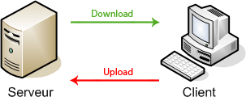
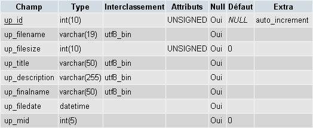
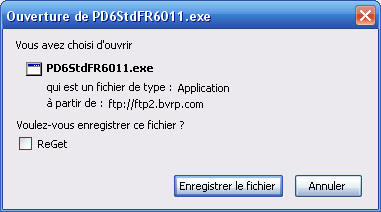

L'utilisation des formulaires n'est pas des plus compliquées, et vous en avez certainement déjà utilisé pour créer votre site web, ne serait-ce que pour la page d'inscription et de connexion.
Mais dès que l'on souhaite aller plus loin, et proposer aux visiteurs de personnaliser leur avatar ou d'envoyer une image, cela devient plus difficile. Or, PHP propose des fonctions permettant justement de créer ce genre de script.
Internet est un réseau mondial, regroupant des millions d'individus répartis sur le globe. Toutes ces personnes s'échangent des messages, partagent des fichiers, jouent ou cherchent des informations. Nous échangeons donc des données directement avec d'autres personnes ou avec des ordinateurs installés dans des locaux.
Tous ces transferts de données d'un ordinateur à l'autre se font par le biais de connexions, qu'elles soient filaires ou non-filaires (comme le célèbre WiFi). Une connexion est donc un lien entre deux ordinateurs.
Imaginons qu'Alice souhaite envoyer un message à Bob. Pour ce faire, elle a besoin de créer une connexion avec Bob. Heureusement, ce n'est pas directement Alice mais son ordinateur qui va s'occuper de créer et de gérer cette connexion. Alice utilisera très probablement un logiciel muni d'une interface graphique simple dans lequel elle devra indiquer à qui elle souhaite envoyer son message. Pour ce faire, elle doit donc connaître son adresse (e-mail, IP, ICQ ou autre). Une fois l'adresse connue, l'ordinateur d'Alice envoie une demande de connexion à celui de Bob, qui peut alors l'accepter. Les deux ordinateurs peuvent ensuite s'échanger des données.
L'ordinateur (ainsi que le logiciel) qui crée la connexion s'appelle le client, alors que celui qui « reçoit » la demande s'appelle le serveur. Pour chacun des ordinateurs, les données reçues constituent le download (téléchargement), alors que les données envoyées constituent l'upload (téléversement). Si vous avez bien compris, vous devriez alors voir que tout ce qui est de l'upload pour le client, est du download pour le serveur, et réciproquement.

Figure 1 - Vue de la connexion pour le client.
Consulter un site web revient généralement à télécharger (download) les pages, images et autres fichiers qui forment la page que l'on souhaite. C'est le navigateur qui s'occupe de gérer toutes les connexions nécessaires, qui envoie les demandes de fichiers, reçoit les fichiers et affiche la page.
Mais depuis de nombreuses années, les sites s'ouvrent aux visiteurs de manière à leur permettre de participer à la vie du site. On trouve désormais bon nombre de forums, des galeries, et de nombreuses autres applications en ligne. Pour permettre aux visiteurs d'envoyer des données, la page contient un formulaire.
Donc, dans un premier temps, le visiteur sélectionne le fichier. Ensuite, après avoir rempli le reste du formulaire, il clique sur le bouton pour l'envoyer. À ce moment-là, le navigateur du client demande au serveur la page « cible » (spécifiée grâce à l'attribut action du formulaire) en lui envoyant une requête HTTP. Dans cette requête, le navigateur fournit diverses informations (page demandée, nom et version du navigateur, cookies qu'il possède pour ce site, etc.) dont les données du formulaire.
Le serveur (Apache par exemple) analyse la requête et passe le relais à PHP. Juste avant de lancer l'exécution de la page demandée, PHP s'occupe des données envoyées par le formulaire :
les champs textuels (text, checkbox, select, textarea, ...) sont copiés dans le tableau superglobal $_POST ;
les informations concernant les champs de type file sont enregistrées dans le tableau superglobal $_FILES ;
les fichiers sont temporairement placés dans le dossier temporaire du serveur.
Une fois que tout est prêt, PHP commence à exécuter le script de la page demandée. C'est donc le script PHP qui va pouvoir gérer le fichier. Il ne faudra pas oublier que le fichier est dans un dossier temporaire, et donc que si l'on souhaite le garder, il faudra le placer ailleurs (dans un dossier du site par exemple). Si au contraire on décide de ne pas garder le fichier (par exemple si on remarque qu'il est trop grand, que ce n'est pas une image, …) il suffit de ne pas le déplacer ; il sera effacé automatiquement lorsque le script aura fini d'être exécuté.
Nous allons voir plus en détail comment mettre en place le script.
Bien, nous voici donc à la première étape : la création d'un formulaire. Le visiteur qui veut uploader un fichier doit passer par un formulaire.
Le champ de sélection
Je ne peux pas simplement faire un champ texte pour indiquer l'adresse du fichier sur le disque dur ?
Eh bien non, cela serait terriblement dangereux. En effet, s'il suffisait au script PHP d'avoir l'adresse du fichier pour pouvoir le prendre sur le disque dur du visiteur, un webmaster mal intentionné pourrait prendre tous les fichiers qu'il veut, et donc même ceux qui contiennent vos informations confidentielles ! C'est pourquoi on utilise un type de champ particulier où seul le visiteur pourra choisir le fichier que le navigateur va envoyer au serveur.
Il faut utiliser la balise XHTML <input /> que vous connaissez déjà sous trois formes :
<input type="text" name="nom" value="valeur par défaut" />
<input type="password" name="nom" value="valeur par défaut" />
<input type="hidden" name="nom" value="valeur par défaut" />
Nous allons utiliser une autre forme de cette balise, qui permet au visiteur de sélectionner un fichier dans une liste. Elle est fortement semblable aux trois formes précédentes, mais son type est « file » et elle ne peut pas avoir de valeur par défaut :
<input type="file" name="nom" />
Citation : Aperçu
Elle permet, comme vous le voyez, de sélectionner un fichier à envoyer. Vous pouvez en mettre autant que vous le souhaitez dans votre formulaire, mais n'oubliez pas de leur donner des noms différents. :)
L'en-tête du formulaire
Pour que le navigateur sache qu'il doit envoyer un fichier, on l'indique dans l'en-tête du formulaire. C'est très simple, mais il faudra bien y penser pour que votre formulaire fonctionne correctement. Vous connaissez déjà la balise <form>, il ne devrait donc pas vous être difficile d'y ajouter une propriété. Il s'agit de la propriété enctype, qui indique le type d'encodage des données. Elle prendra la valeur « multipart/form-data », qui spécifie que le formulaire envoie des données binaires (fichier) et du texte (champs de formulaire). Ce qui nous donne ceci :
Profitons-en pour nous intéresser aux deux autres propriétés du formulaire.
method : c'est la façon dont les informations seront envoyées, soit par l'URL si la méthode est « GET », soit dans la requête HTTP si la méthode est « POST ». Dans le cas de l'envoi d'un fichier, cette propriété doit être placée à « POST », car le fichier ne peut pas être passé par l'URL ( ^^ ) . Il existe d'autres valeurs possibles, mais qui ne nous intéressent pas ici.
action : c'est la page qui sera appelée lors de l'envoi du formulaire. C'est-à-dire, par exemple, le script PHP qui va traiter la réception du fichier. Vous pouvez placer le script sur la même page que le formulaire, comme vous avez appris à le faire dans le cours PHP (que vous devez aussi avoir lu pour poursuivre ce tutoriel).
Restrictions
Un webmaster sain d'esprit ne laissera pas n'importe qui uploader n'importe quoi ( ^^ ) . C'est pourquoi il est nécessaire d'apprendre à restreindre l'envoi. Nous verrons par la suite que c'est en PHP que se fera la plus grosse partie de la vérification, mais il est déjà possible, en XHTML, de fixer une limite de taille sur l'envoi.
C'est en fait juste une variable que l'on communique au navigateur dans le formulaire. Comme le visiteur n'a pas besoin de voir ce champ, on lui attribue le type hidden.
Cette restriction se fait en octets. Normalement, depuis quelques années, 1 Go = 1 000 Mo = 1 000 000 Ko = 10^9 octets, mais cette norme n'est pas suivie par tout le monde ; il existe encore beaucoup de cas où le « vieux » système de conversion est utilisé :
1 Go = 2^10 Mo = 1024 Mo
1 Mo = 2^10 Ko = 1024 Ko
1 Ko = 2^10 octets = 1024 octets
::>
1 Mo = 2^20 octets = 1048576 octets
Vous devez placer ce champ avant le champ de sélection du fichier. Remarque : ce champ fixe la limite totale des uploads, et comprend donc tous les fichiers uploadés par ce formulaire.
Finalisation/Exemple
Nous avons maintenant vu tout ce qui est nécessaire pour réaliser un formulaire d'upload. Bien sûr, vous pouvez ajouter autant de champs que vous le souhaitez. Pour ma part, je vais par exemple ajouter un champ de type texte pour indiquer une brève description. J'ai aussi décidé de permettre au visiteur d'envoyer deux fichiers avec le formulaire. Au final, mon code XHTML ressemble à ceci :
Poursuivons notre petite histoire. Le formulaire est en place ; le visiteur le remplit puis le valide. Comme je vous l'ai expliqué, les fichiers sont alors uploadés et placés dans un répertoire temporaire. L'avantage, c'est que seul le script PHP pourra accéder à ce dossier.
Nous allons donc contrôler le fichier puis le déplacer vers un dossier du site. On peut contrôler plusieurs choses : la taille, le type, le nom, les dimensions (si c'est une image), …
Le tableau $_FILES contient certaines informations sur les fichiers. Pour chaque champ de type file, on peut obtenir les informations le concernant dans le tableau $_FILES[attribut_name]. On retrouve actuellement les informations suivantes :
<?php
$_FILES['icone']['name'] //Le nom original du fichier, comme sur le disque du visiteur (exemple : mon_icone.png).
$_FILES['icone']['type'] //Le type du fichier. Par exemple, cela peut être « image/png ».
$_FILES['icone']['size'] //La taille du fichier en octets.
$_FILES['icone']['tmp_name'] //L'adresse vers le fichier uploadé dans le répertoire temporaire.
$_FILES['icone']['error'] //Le code d'erreur, qui permet de savoir si le fichier a bien été uploadé.
?>
Contrôles sur le fichier
Une première vérification consiste à savoir si le fichier a bien été uploadé. Pour ce faire, nous allons utiliser le code d'erreur du fichier. Ensuite nous pourrons effectuer les autres tests.
<?php
if ($_FILES['icone']['error'] > 0) $erreur = "Erreur lors du transfert";
?>
On peut même préciser de quel type d'erreur il s'agit en comparant le code d'erreur à plusieurs constantes :
Citation
UPLOAD_ERR_NO_FILE : fichier manquant. UPLOAD_ERR_INI_SIZE : fichier dépassant la taille maximale autorisée par PHP. UPLOAD_ERR_FORM_SIZE : fichier dépassant la taille maximale autorisée par le formulaire. UPLOAD_ERR_PARTIAL : fichier transféré partiellement.
Commençons par la taille maximale. Pas difficile, c'est une simple comparaison. :)
<?php
if ($_FILES['icone']['size'] > $maxsize) $erreur = "Le fichier est trop gros";
?>
Pour le type, nous n'allons pas utiliser le type du tableau mais l'extension du fichier, ce qui sera plus simple. Rassurez-vous, cela revient exactement au même, car le type est pris en fonction de l'extension. Ce qui signifie aussi, malheureusement, qu'on ne peut pas être sûr de la nature du fichier. Le moyen le plus efficace et le plus polyvalent est de placer les extensions autorisées dans un tableau puis de vérifier que l'extension du fichier est bien dans ce tableau. On pourrait aussi, si on souhaitait autoriser tous les types de fichier mis à part quelques uns, lister les extensions non autorisées et vérifier ensuite que l'extension du fichier uploadé ne s'y trouve pas. Pour cette dernière méthode, il suffit alors d'ajouter une négation à la condition grâce à « ! ».
<?php
$extensions_valides = array( 'jpg' , 'jpeg' , 'gif' , 'png' );
//1. strrchr renvoie l'extension avec le point (« . »).
//2. substr(chaine,1) ignore le premier caractère de chaine.
//3. strtolower met l'extension en minuscules.
$extension_upload = strtolower( substr( strrchr($_FILES['icone']['name'], '.') ,1) );
if ( in_array($extension_upload,$extensions_valides) ) echo "Extension correcte";
?>
Pour contrôler les dimensions d'une image, il suffit d'utiliser une fonction PHP, getimagesize(), qui retourne un tableau. Nous devons bien évidemment spécifier l'adresse du fichier, qui pour l'instant se trouve dans le dossier temporaire. La fonction retourne alors un tableau dont l'index 0 donne la largeur et l'index 1 la hauteur de l'image. C'est ici encore une simple condition.
<?php
$image_sizes = getimagesize($_FILES['icone']['tmp_name']);
if ($image_sizes[0] > $maxwidth OR $image_sizes[1] > $maxheight) $erreur = "Image trop grande";
?>
En utilisant conjointement ces deux ou trois tests, on peut s'assurer que le fichier est correct et que nous pouvons donc le déplacer dans un dossier du site sans danger. Je ne vous ai pas donné le code final, mais vous devriez être capables de le réaliser facilement avec les lignes de code que je vous ai données. Si vous n'y arrivez pas, c'est que vous devriez sans doute relire le cours, car vous n'avez pas compris le fonctionnement de PHP.
Déplacer le fichier
Pour déplacer le fichier, nous avons besoin de deux informations : l'emplacement de départ, que nous connaissons déjà grâce à la variable superglobale $_FILES, et l'emplacement de destination, que nous devons fixer nous-mêmes. Ici, plusieurs possibilités s'offrent à nous. Il est toujours important de bien choisir de quelle façon on va nommer les fichiers. Il faut se rappeler deux règles fondamentales : deux fichiers ne peuvent pas avoir le même nom dans le même dossier, et il faut faire attention à l'extension. Ce qui veut dire que l'on ne va presque jamais garder le nom de départ du fichier, car deux visiteurs différents pourraient avoir un fichier du même nom. Pour l'extension, nous verrons par la suite comment contourner le problème. Voici d'abord quelques exemples de noms :
un avatar : on peut lui donner le numéro unique (id) du membre (1, 2, 343, ...) ;
une image perso : on peut créer un dossier par membre (s'il peut uploader plusieurs fichiers) et garder le nom de départ ;
un tracker torrent : on peut lui attribuer un numéro unique (son id dans une BDD par exemple).
Il existe de nombreux autres choix possibles : attribuer un nom alphanumérique généré au hasard, la date actuelle, etc.
<?php
//Créer un dossier 'fichiers/1/'
mkdir('fichier/1/', 0777, true);
//Créer un identifiant difficile à deviner
$nom = md5(uniqid(rand(), true));
?>
Pour l'extension, on a plusieurs possibilités. On peut garder celle de départ, s’il s’agit par exemple d'une image ou d'un document PDF. En revanche, si l'extension de départ est php ou html, mieux vaut changer l'extension pour éviter que le visiteur puisse placer ses propres scripts sur le site. >Il y a plusieurs façons de procéder : on peut se contenter d'ajouter une extension après celle déjà existante (par exemple page2.php deviendrait page2.php.file) ; on peut remplacer l'extension par une autre (page2.php deviendrait page2.file) ; ou on peut finalement retirer l'extension (page2.php deviendrait page2). Évidemment, lorsqu'un visiteur voudra télécharger le fichier, il faudra remettre l'extension correcte, mais nous verrons comment faire cela plus tard.
Une fois le nom du fichier choisi, il faut déplacer le fichier du répertoire temporaire vers le dossier de destination. Il existe pour cela une fonction très simple qui fonctionne presque exactement comme la fonction copy() ; il s'agit de la fonction move_uploaded_file(). La principale différence avec copy, c'est qu'elle vérifie également que le fichier que l'on souhaite déplacer provient bien d'un formulaire PHP. Voici un exemple d'utilisation :
La fonction renvoie vrai ou faux, selon que le fichier a bien été déplacé ou non. On peut donc s'assurer que le transfert a bien eu lieu, ce qui constitue la dernière étape dans l'upload du fichier.
Nous allons maintenant voir comment nous pouvons tirer parti de l'upload de plusieurs manières.
Une fois le fichier uploadé et déplacé dans un dossier du site, il est possible d'effectuer plusieurs actions. Parmi les nombreuses possibilités qui s’offrent à nous, voici les quelques-unes que nous allons étudier :
enregistrement des infos dans une BDD ;
téléchargements avec compteur ;
création de miniatures.
Enregistrement des infos dans une BDD
Je ne vais pas vous apprendre à créer une table ou à insérer un nouvel enregistrement. En revanche, je peux vous donner quelques conseils pour bien utiliser votre BDD.
Tout d'abord, notons quelles informations sont utiles à enregistrer : le titre, la description, le nom du fichier, son nom dans le dossier du site, la date d'ajout, la taille, et, si vous avez un espace membre, pourquoi ne pas y ajouter l'id du membre qui a posté le fichier ?
Le nombre de champs, et ceux que vous choisissez, dépend fortement de l'utilisation que vous souhaitez faire de ces fichiers. S'il s'agit juste d'un avatar, il est certainement inutile d'enregistrer des infos dans une BDD, il suffit de donner comme nom à l'image l'id du membre et vous éviterez ainsi une requête inutile. :) S'il s'agit au contraire d'une galerie, il est très pratique d'enregistrer les infos dans une table en y ajoutant par exemple une note attribuée par les visiteurs. Réfléchissez toujours à ce dont vous aurez besoin par la suite.
Voici, par exemple, la table que je pourrais créer pour un mini-espace membre permettant d'uploader des fichiers :
Citation : Table MySQL

La raison pour laquelle j'ai mis un champ filesize est simple : pour éviter de devoir aller chercher la taille pour chaque fichier, on l'enregistre dans la BDD, ce qui permet d'économiser un temps de traitement intéressant. Le champ d'identification est quant à lui toujours très utile : en mode auto_increment, il vous permettra de directement pouvoir accéder aux infos d'un fichier particulier.
Enfin, n'oubliez pas d'optimiser vos tables en utilisant les types corrects :
un nombre est de type TINYINT, SMALLINT, MEDIUMINT, INT, BIGINT, FLOAT, DOUBLE ou DECIMAL selon sa précision, et n'oubliez pas d'indiquer sa taille selon vos besoins ;
un texte est de type VARCHAR (moins de 256 caractères) ou TEXT (plus de 256 caractères) ;
une date est de type DATE pour uniquement la date, TIME pour uniquement l'heure, ou DATETIME pour les deux réunis ;
un booléen (VRAI/FAUX) n'a pas de type particulier. On utilise un TINYINT de taille 1 positionné à 0 ou 1 (pas ENUM!) ;
une suite binaire est de type BLOB ou BINARY.
Téléchargements avec compteur
Le principe est assez simple : on veut permettre aux visiteurs de télécharger un fichier tout en comptant le nombre de téléchargements de celui-ci. Il nous faut bien sûr utiliser la table que vous aurez créée en y ajoutant un champ permettant de mémoriser le nombre de downloads. Il s'agit donc d'un champ de type INT(5), appelé par exemple up_counter. :)
Imaginons qu'une page référence les différents fichiers (ce que vous savez faire, puisqu'il suffit de lister le contenu de la table ^^ ) avec des liens pour télécharger les fichiers. Ces liens indiquent le numéro d'identification du fichier, par exemple :
La première chose à faire, c'est de récupérer quelques informations dans la table pour pouvoir les envoyer au visiteur. C'est une simple requête de sélection :
SELECT up_filename, up_filesize, up_final FROM upfiles WHERE up_id = …
Bien sûr, les « … » doivent être remplacés par l'id donné par le lien ( $_GET['file'] ).
Vous devez ensuite mettre à jour le nombre de téléchargements. C'est facile, il suffit d'incrémenter un champ de la table :
UPDATE upfiles SET up_counter = up_counter + 1 WHERE up_id = ...
Je vais maintenant vous montrer le code qui va servir à envoyer le fichier en le commentant un maximum. Surtout, ne vous contentez pas de le copier, comprenez-le ! Si j'ai évité de vous donner trop de code dans ce tutoriel, c'est pour vous forcer à réfléchir. Le but d'un programmeur ou d'un codeur n'est pas de pouvoir copier un bout de code, c'est de pouvoir l'adapter à ses besoins, produire un code optimisé et juste pour chaque application rencontrée.
<?php
/*Après avoir vérifié que le fichier existe (l'id est bien dans la BDD) et
après avoir sélectionné les informations sur le fichier dans la BDD (dans $bdd_infos) */
//Création des headers, pour indiquer au navigateur qu'il s'agit d'un fichier à télécharger
header('Content-Transfer-Encoding: binary'); //Transfert en binaire (fichier)
header('Content-Disposition: attachment; filename="'.$bdd_infos['up_final'].'"'); //Nom du fichier
header('Content-Length: '.$bdd_infos['up_filesize']); //Taille du fichier
//Envoi du fichier dont le chemin est passé en paramètre
readfile($bdd_infos['up_filename']);
?>
Le nom du fichier (up_final) correspond au nom que le serveur va proposer au visiteur. Par exemple, si on indique filename="PD6StdFR6011.exe", voilà à quoi pourrait ressembler la fenêtre de téléchargement :

C'est donc ici que vous pourrez remédier au problème de l'extension (il suffit de l'ajouter au nom de fichier).
Une amélioration possible peut être la nécessité d'être identifié pour télécharger un fichier. En effet, puisque c'est PHP qui gère l'envoi du fichier, vous pouvez facilement contrôler avant le script que le visiteur est connecté. De plus, comme PHP accède aux fichiers en local, vous pouvez placer un .htaccess dans le dossier où se trouvent vos fichiers : de cette manière, vous pourrez empêcher les visiteurs d'accéder au fichier sans passer par le script PHP, qui, lui, n'est pas affecté par le .htaccess.
Création de miniatures
Je ne vais pas m'attarder sur le sujet. En fait, j'ai simplement remarqué que beaucoup de codeurs inexpérimentés avaient du mal avec la création et la gestion de miniatures. Je vais simplement vous donner quelques conseils, mais je ne vais pas vous donner la fonction pour créer des miniatures, ce n'est pas l'objet de ce tutoriel.
Une miniature est une image, qui, comme son nom l'indique, permet d'avoir un aperçu en plus petit d'une image trop grande pour être facilement et rapidement affichée. C'est le cas d'une galerie photo, où on affiche sur une page une série de miniatures, chacune donnant accès, par un simple lien, à l'image de taille réelle.
Une première chose à vérifier, c'est que les miniatures prennent peu de place, aussi bien en taille physique (le nombre de pixels) qu'en poids (le nombre d'octets). Si les miniatures sont trop volumineuses, pensez à réduire la taille ou à diminuer la qualité, sans pour autant la rendre trop floue.
Ensuite, ne placez pas les miniatures dans le même dossier que les originales, placez-les dans un dossier spécial « miniatures » tout en gardant le même nom que l'image originale de façon à pouvoir facilement l'utiliser. En effet, si vous avez comme nom, pour les deux fichiers, « image112 », il vous suffira de changer le dossier pour pouvoir afficher soit l'une, soit l'autre. Vous n'aurez ainsi besoin que d'un seul champ pour les deux noms dans la BDD ( up_filename ). Par exemple :
<?php
//Après avoir récupéré les infos de l'image dans $bdd_infos
echo "<a href='images/uploaded/".$bdd_infos['up_filename']."'><img src='images/miniatures/".$bdd_infos['up_filename']."'></a>";
?>
Pour ce qui est de l'endroit où placer le code pour créer la miniature, c'est bien de le faire juste avant l'insertion des infos du fichier uploadé dans la BDD, sur la page d'upload.
Nous y voilà enfin : nous touchons à la fin de ce tutoriel, qui, je l'espère, vous aura permis de maîtriser un peu mieux certaines facettes de PHP. Mais avant de nous quitter, je tiens à vous offrir une petite fonction ou deux. Vous allez vite comprendre quel en est l'intérêt.
Pur concentré
Pour faciliter l'upload de plusieurs fichiers, cette petite fonction rassemble les tests et déplace le fichier.
<?php
function upload($index,$destination,$maxsize=FALSE,$extensions=FALSE)
{
//Test1: fichier correctement uploadé
if (!isset($_FILES[$index]) OR $_FILES[$index]['error'] > 0) return FALSE;
//Test2: taille limite
if ($maxsize !== FALSE AND $_FILES[$index]['size'] > $maxsize) return FALSE;
//Test3: extension
$ext = substr(strrchr($_FILES[$index]['name'],'.'),1);
if ($extensions !== FALSE AND !in_array($ext,$extensions)) return FALSE;
//Déplacement
return move_uploaded_file($_FILES[$index]['tmp_name'],$destination);
}
//EXEMPLES
$upload1 = upload('icone','uploads/monicone1',15360, array('png','gif','jpg','jpeg') );
$upload2 = upload('mon_fichier','uploads/file112',1048576, FALSE );
if ($upload1) "Upload de l'icone réussi!<br />";
if ($upload2) "Upload du fichier réussi!<br />";
?>
Son utilisation est très simple et permet de gérer facilement une suite de fichiers. On indique en premier paramètre le nom du fichier (c'est le name du formulaire), puis le chemin de destination avec le nom complet du fichier (comme par exemple un nom unique). On peut ensuite indiquer une taille limite (en octets), ou FALSE pour ne pas en fixer. Enfin, on peut préciser dans un tableau les extensions autorisées, ou écrire FALSE si elles sont toutes permises.
Il est bien sûr possible de faire davantage de choses à partir d'un simple formulaire d'upload, mais avec ce que vous avez appris et compris durant ce tutoriel, vous devriez être capables de faire tout ce que vous souhaitez… ou presque. ^^
Si toutefois vous avez des questions, n'hésitez pas à venir les poser sur le forum.